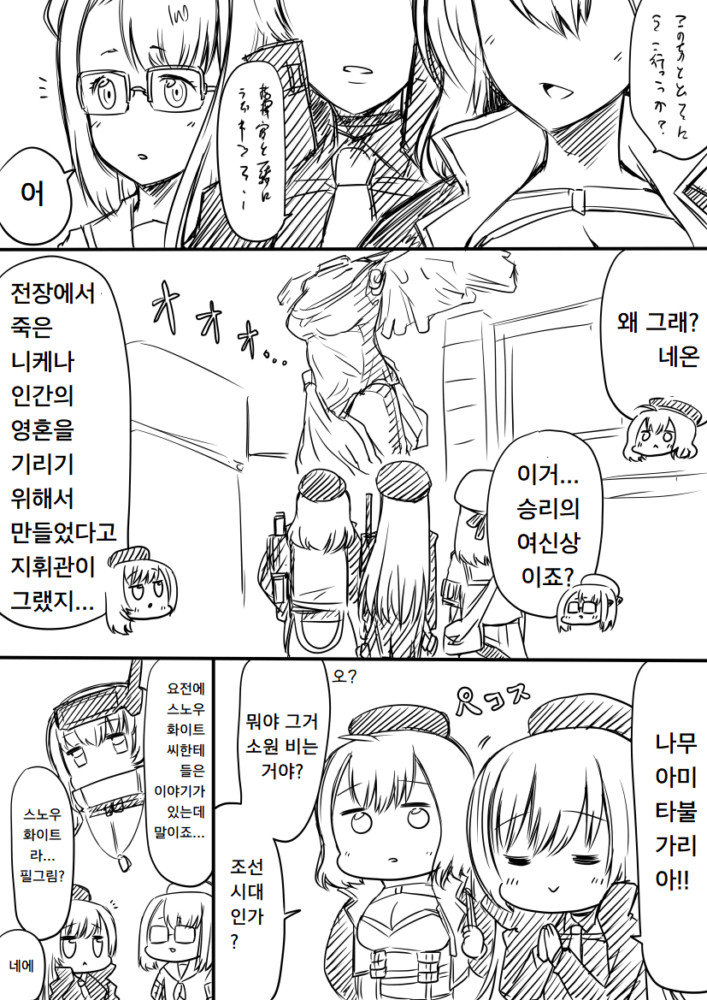
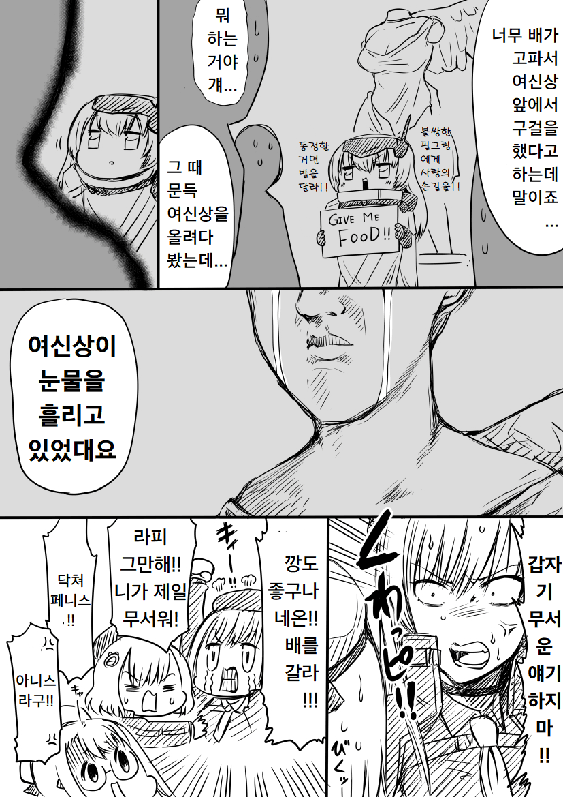
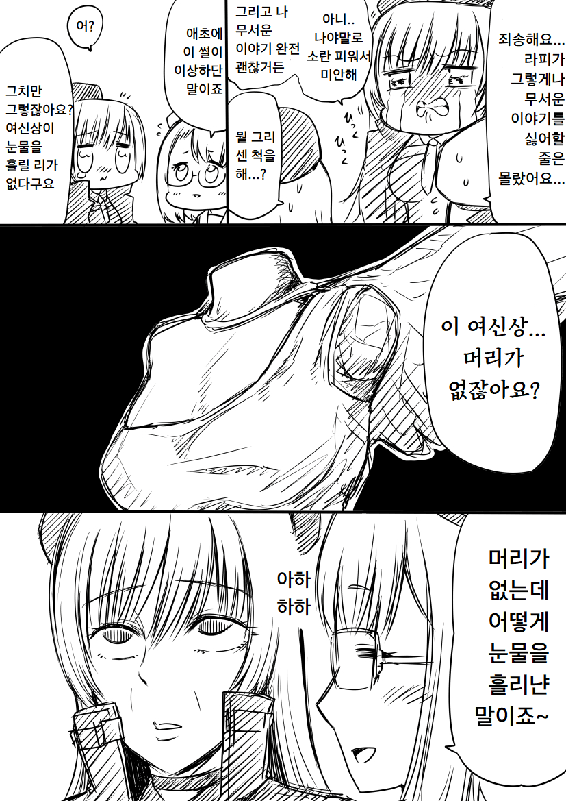
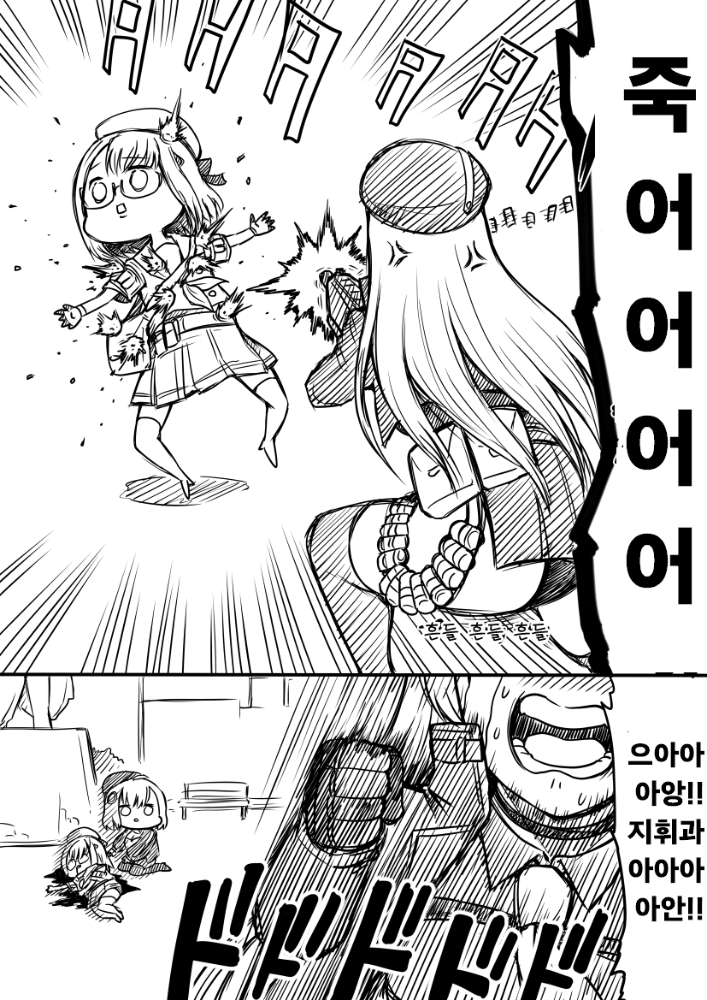

https://twitter.com/jinnseimakegumi/status/1603738764362231808
네또죽
원본: https://gall.dcinside.com/mgallery/board/view/?id=gov&no=49721
백업 시각:




https://twitter.com/jinnseimakegumi/status/1603738764362231808
네또죽